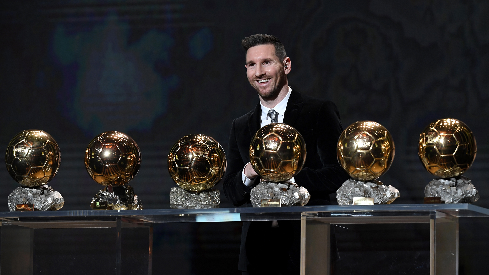

RÉCORDS
- Máximo goleador histórico con un mismo equipo
Máximo goleador histórico del FC Barcelona
Máximo goleador histórico de LaLiga
Máximo goleador del siglo XXI
Máximo goleador histórico en el Clásico
Récord Guiness goleador en un año natural (91 goles)
Máximo goleador histórico de selecciones en Sudamérica
MVP del Mundial 2014 en Brasil y del Mundial 2022 en Qatar

- Jugador de la historia del FC Barcelona con más partidos disputados
Jugador de la historia del FC Barcelona con más títulos
Máximo goleador en una misma temporada LaLiga (50 goles)
Máximo goleador histórico de Champions con un mismo club
Jugador con más partidos disputados en la historia con Argentina
Jugador argentino con más títulos oficiales
Máximo goleador argentino en partidos oficiales
Máximo goleador histórico de la selección argentina
PREMIOS INDIVIDUALES

Leo de Oro
Lionel Messi se quedó con el Balón de Oro de 2023 y, a lo largo de su exitosa carrera, ya ganó un total de 56 títulos individuales.
Ir al sitio